관광 명소 15곳
사진은 Wikimedia Commons에 공개된 실제 촬영본이며, 저작자와 라이선스를 각 사진 아래에 적었습니다. 촬영한 날씨·시기·구도에 따라 실제 모습은 다를 수 있습니다.
-

사진: Daniel Dimitrov · CC BY-SA 4.0 · Wikimedia Commons 릴라 수도원Рилски манастир
흑백 아치와 채색 프레스코가 인상적인 불가리아의 대표 수도원.
자세히 보기
10세기 성 이반 릴라의 수도 전통에서 출발했으며 19세기 화재 이후 재건된 건물이 민족부흥기 건축과 종교문화를 보여준다. 1983년 UNESCO 등재.
- 볼거리
- 수도원 내부 안뜰의 줄무늬 아치·교회 돔·벽화·흐렐료 탑을 비교해 관찰.
- 시기
- 봄~가을, 겨울에도 방문 가능
- 방문 유의사항
- 소피아에서 산길 이동 시간이 길 수 있음.
-

사진: CivArmy · CC BY 4.0 · Wikimedia Commons 플로브디프 로마 원형극장Античен театър на Филипопол
구시가지 언덕을 배경으로 반원형 관람석이 펼쳐지는 고대극장.
자세히 보기
로마시대 필리포폴리스의 공공 건축유산으로 도시의 트라키아·로마·오스만·근대 역사를 함께 읽는 출발점이다.
- 볼거리
- 돌계단·무대 건물·구시가지 전망을 연결하고 카파나 예술지구와 동선을 결합.
- 시기
- 봄·가을
- 방문 유의사항
- 공연 행사일 출입·관람시간은 현장 확인.
-
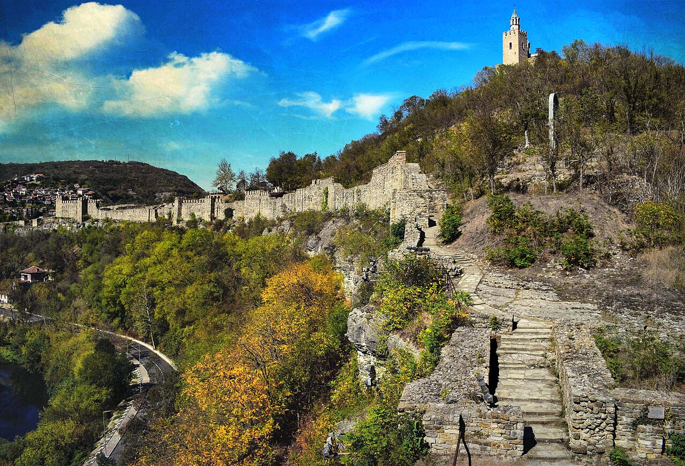
사진: Jocelyn Erskine-Kellie from London, UK · CC BY-SA 2.0 · Wikimedia Commons 차레베츠 요새Царевец
얀트라강 굽이와 언덕을 장악한 제2불가리아 제국의 방어 거점.
자세히 보기
12~14세기 타르노보는 불가리아 제국의 중심지였으며 차레베츠는 왕궁·종교시설·성벽이 모인 언덕이다.
- 볼거리
- 성벽·왕궁 흔적·언덕 위 총대주교 성당, 주변 강 굽이 전망.
- 시기
- 봄·가을
- 방문 유의사항
- 여름 햇볕 강하고 경사가 있으며 야간 조명쇼 운영 여부 확인.
-
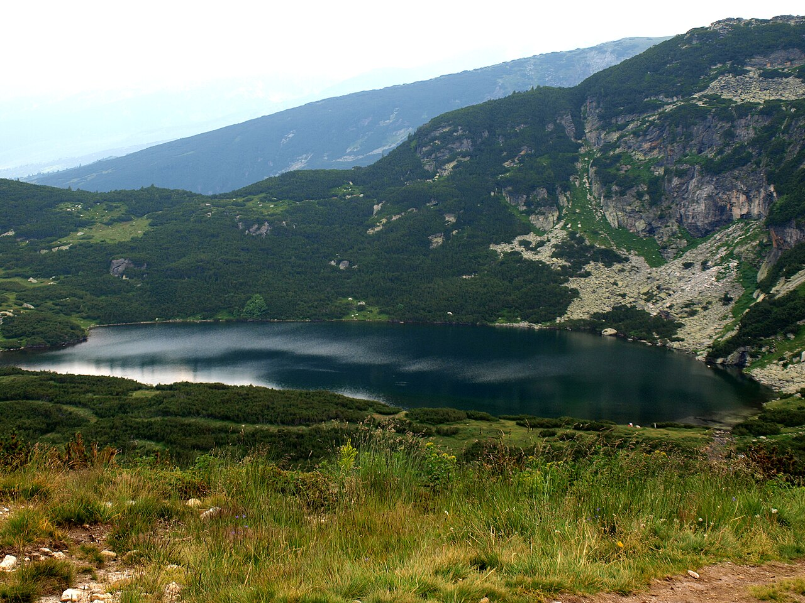
사진: Tsvetomira Zaharieva · CC BY-SA 4.0 · Wikimedia Commons 일곱 릴라 호수Седемте рилски езера
빙하 지형에 계단식으로 자리한 고산호수 군.
-
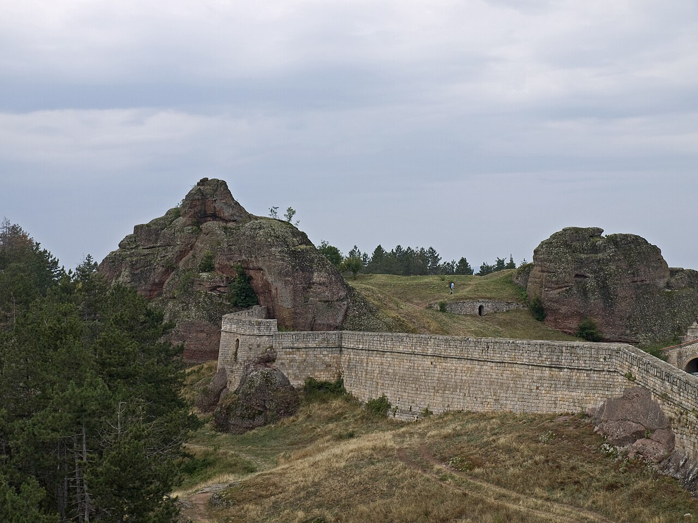
사진: Ymblanter · CC BY-SA 4.0 · Wikimedia Commons 벨로그라드치크 바위와 요새Белоградчишки скали / Белоградчишка крепост
붉은 사암층의 기묘한 바위와 바위 사이 성벽이 만나는 풍경.
자세히 보기
수백만 년 침식으로 형성된 독특한 바위 구조를 역사적으로 방어시설에 활용해 왔다. UNESCO 등재 유산이 아니라 잠정목록이라는 점을 구별해야 한다.
- 볼거리
- 이색 암봉과 성문·성벽을 동시에 볼 수 있는 지점, 지역 지질학 해설.
- 시기
- 봄·가을
- 방문 유의사항
- 바위계단·노출 난간 주의, 기상 악화 시 접근 제한 가능.
출처: whc.unesco.org
-
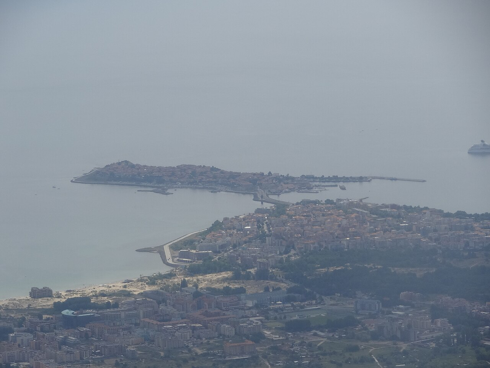
사진: Cherubino · CC BY-SA 3.0 · Wikimedia Commons 네세버르 구시가지Старият Несебър
작은 반도에 모인 돌담집과 중세 교회들.
자세히 보기
고대 트라키아·그리스·비잔틴·불가리아 시대의 건축층위가 보존된 UNESCO 세계유산. 흑해 항만도시의 상업사를 알기 좋다.
- 볼거리
- 해안에서 본 반도 실루엣과 성 스테판 교회 등 중세 벽돌 교회 관람.
- 시기
- 늦봄·초가을
- 방문 유의사항
- 여름 혼잡, 오래된 골목은 주민 생활 공간.
출처: whc.unesco.org
-

사진: Harfang · CC BY-SA 3.0 · Wikimedia Commons 소피아 알렉산드르 네프스키 대성당Храм-паметник Александър Невски
거대한 금빛 돔이 수도 소피아를 대표하는 성당.
자세히 보기
19세기 말~20세기 초 건립된 기념 성당으로 독립 이후 국가 정체성 형성과 정교회 건축을 함께 설명한다.
- 볼거리
- 돔·아치·광장 전경, 주변 성 소피아 교회·고대 로마 유적 연결.
- 시기
- 연중
-
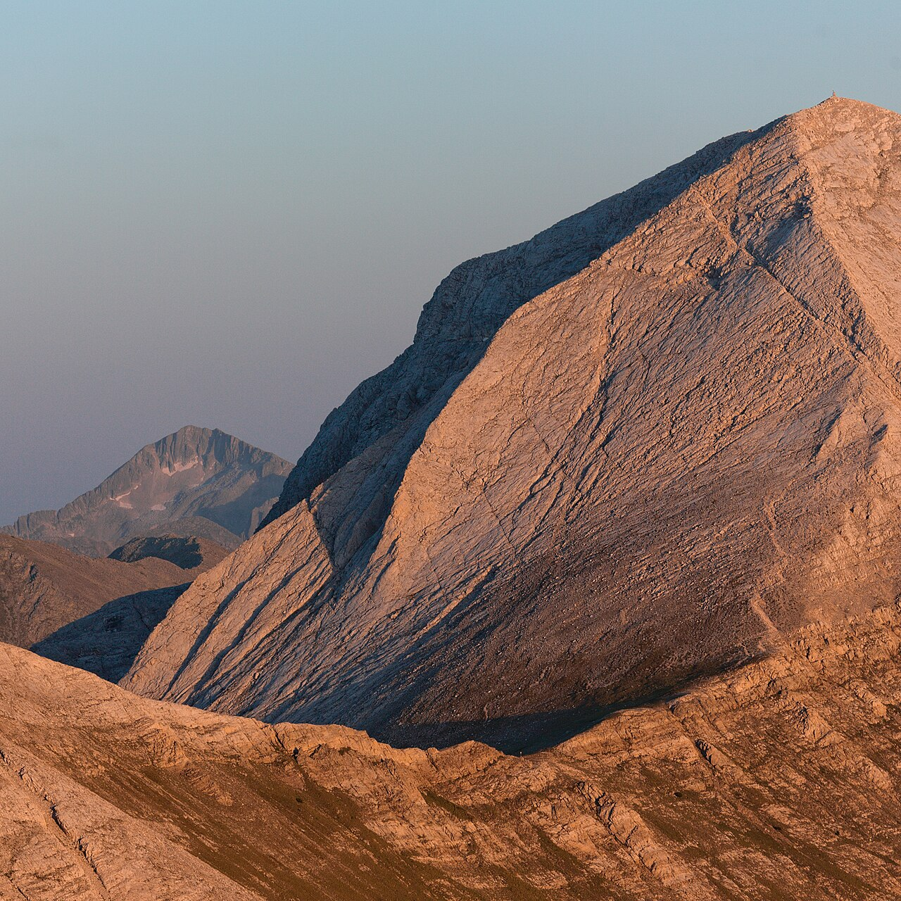
사진: Dido3 · CC BY-SA 4.0 · Wikimedia Commons 피린 국립공원과 반스코Национален парк Пирин / Банско
화강암 봉우리·고산호수·침엽수림을 보이는 산악지역.
자세히 보기
피린국립공원은 빙하호와 생물다양성으로 UNESCO 세계자연유산이다. 반스코는 남쪽 산악관광의 주요 거점.
- 볼거리
- 비흐렌 산군·고산호수·반스코 옛 시가지와 계절별 스포츠를 비교.
- 시기
- 여름 하이킹, 겨울 스키
- 방문 유의사항
- 고산 루트는 숙련도와 악천후 주의. 국립공원 규정 확인.
출처: whc.unesco.org
-

사진: DIMSFIKAS · CC BY-SA 3.0 · Wikimedia Commons 보야나 교회Боянска църква
13세기 인물 프레스코로 유명한 작은 역사 교회.
자세히 보기
1259년 제작된 벽화들이 동유럽 중세 종교미술의 중요한 사례로 평가된다. 세계유산 등재.
- 볼거리
- 건물 외관과 벽화의 미술사적 특징을 별도 그림 자료로 설명.
- 시기
- 연중
출처: whc.unesco.org
-
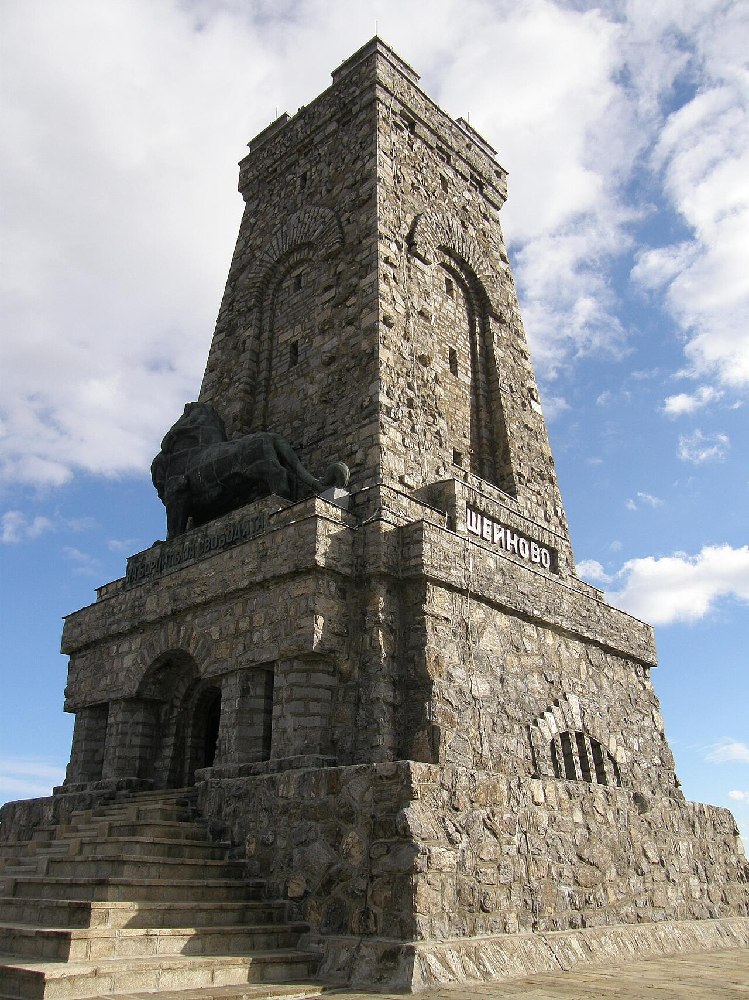
사진: Klearchos Kapoutsis · CC BY 2.0 · Wikimedia Commons 시프카 기념비Паметник на свободата
산 정상의 높다란 기념탑과 전쟁사의 기억.
자세히 보기
1877~1878년 러시아-오스만 전쟁 중 시프카 고개 전투를 기리는 기념공간으로 불가리아 독립·민족서사와 연결된다.
- 볼거리
- 계단 위 석탑과 산맥 풍경, 기념관 맥락 중심.
- 시기
- 봄~가을
- 방문 유의사항
- 산길·계단·기상 변화, 기념공간에 맞는 설명 문구.
-
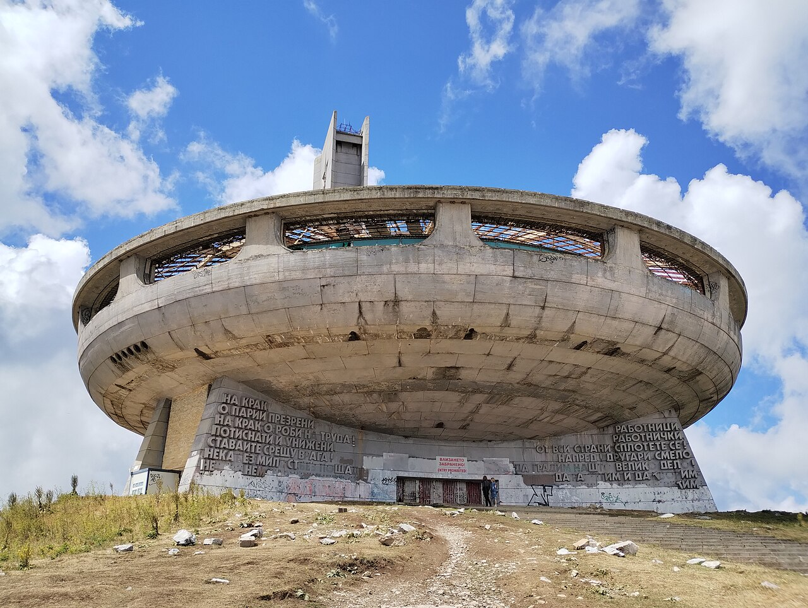
사진: Michał Derela · CC BY-SA 4.0 · Wikimedia Commons 부즐루자 기념 건축물Бузлуджа
우주선처럼 보이는 사회주의시기 기념건축.
자세히 보기
20세기 공산주의 역사와 탈사회주의 문화유산 보존 논의를 소개하기 적합한 현대 건축 사례.
- 볼거리
- 외관의 원반형 구조와 별도 기념탑·산 정상 전경.
- 시기
- 여름·초가을
- 방문 유의사항
- 내부는 위험하고 출입 제한될 수 있음.
-
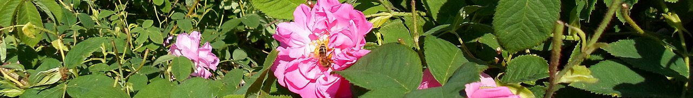
사진: Animsaj · CC BY-SA 3.0 · Wikimedia Commons 카잔러크 장미계곡Розова долина / Казанлък
로즈오일 생산과 축제로 알려진 농업 문화경관.
자세히 보기
장미 재배·증류기술이 향수산업과 연결되며 지역의 역사문화 행사로 확대됐다. 카잔러크 트라키아 무덤은 별도의 UNESCO 유산이므로 구별.
- 볼거리
- 꽃이 피는 시기 장미밭과 증류시설·문화축제.
- 시기
- 보통 늦봄~초여름
-
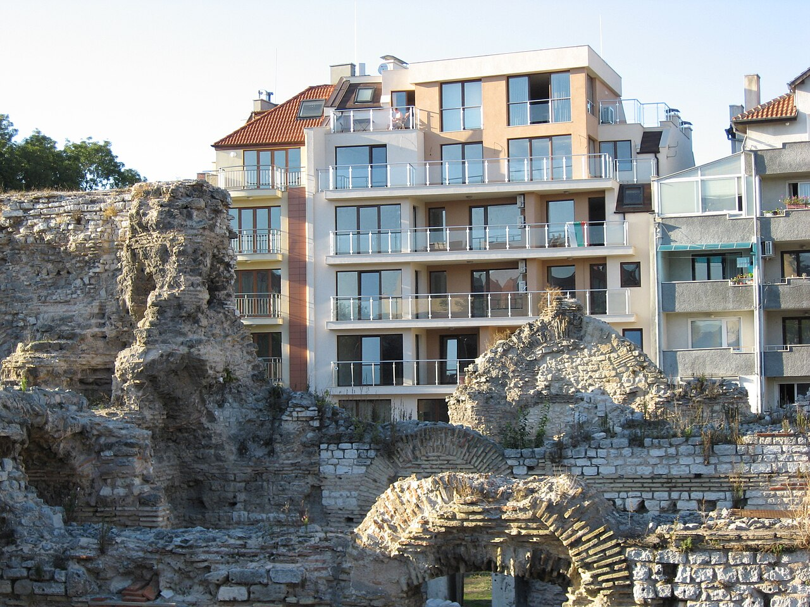
사진: Svilen Enev · CC BY-SA 3.0 · Wikimedia Commons 바르나 흑해 해변·로마목욕탕Варна / Римски терми
휴양 해변과 로마 목욕탕 유적이 공존하는 항구도시.
자세히 보기
흑해 교역 역사와 현대 해안 휴양도시를 병치하기 좋다.
- 시기
- 초여름·초가을
- 방문 유의사항
- 해변 휴양객이 몰리는 성수기 피크 참고.
-
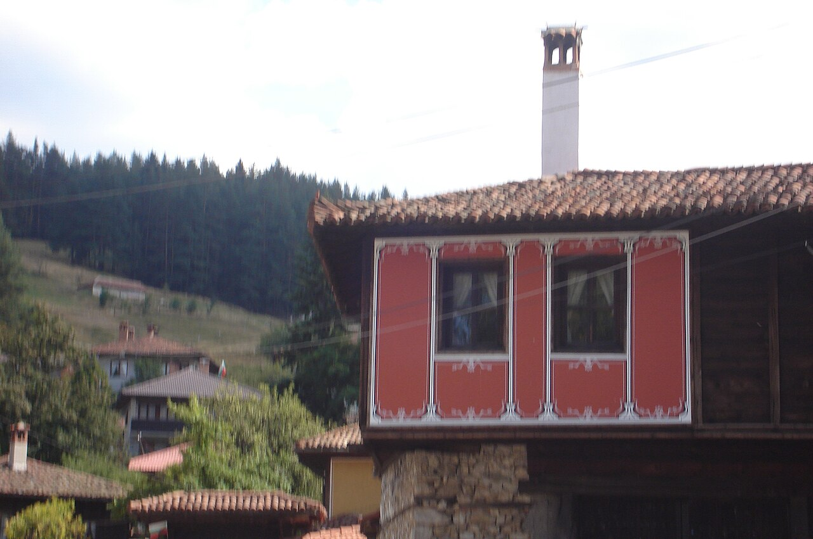
사진: Cho2012 · CC BY-SA 4.0 · Wikimedia Commons 코프리프슈티차 전통가옥마을Копривщица
목조창문과 밝은 채색 벽이 특징인 산간 역사마을.
자세히 보기
19세기 민족부흥기 교육·상업·독립운동의 지역적 중심지로 여러 집이 박물관으로 보존돼 있다.
- 볼거리
- 특징적인 청록·갈색 목조 전통가옥과 돌길, 민속예술.
- 시기
- 봄·가을
- 방문 유의사항
- 박물관마다 휴관 요일이 다를 수 있음.
-
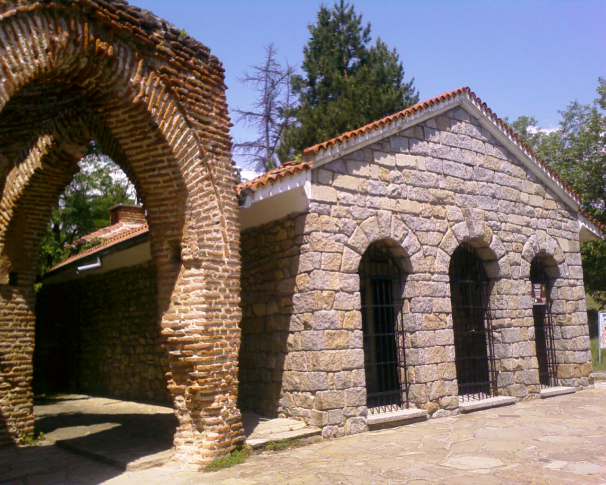
사진: Dragomir Keranov · CC BY-SA 3.0 · Wikimedia Commons 카잔러크 트라키아 무덤Казанлъшка гробница
고대 트라키아 상류층 장례문화를 보여주는 돔형 무덤과 벽화.
자세히 보기
기원전 4세기 말~3세기 초로 평가되는 헬레니즘시대 무덤. 세계유산이며 원본의 보존을 위해 복제품 관람이 일반적.
- 볼거리
- 벽화의 장례행렬·인물 구성과 트라키아 역사 설명.
- 시기
- 연중
출처: whc.unesco.org
여행 전에 확인하세요
운영시간·입장료·예약·개방 여부는 계절과 상황에 따라 바뀝니다. 방문 전에 각 명소의 공식 안내에서 다시 확인하세요. 카드의 "자세히 보기"에 참고한 출처를 적었습니다.
쇼핑·기념품
15개 추천 상품사진 6개 확보
불가리아는 장미의 나라답게 장미 화장품과 잼이 어디에나 있고 값도 쌉니다. 트로얀 도자기와 쿠케리 가면, 스트란자 꿀처럼 지역색이 뚜렷한 상품도 함께 챙겨 보세요.
대표 TOP 3
카테고리별 전체 상품
카드를 누르면 자세한 설명·구매처·반입 유의사항·사진 출처를 볼 수 있습니다. 가격은 검증된 자료가 없어 싣지 않았고, 구매처는 2026.11.23 기준 정리라 바뀔 수 있습니다. 반입 규정은 관세청·농림축산검역본부 안내를 요약한 것으로 최종 판단은 입국 시 세관에서 합니다.